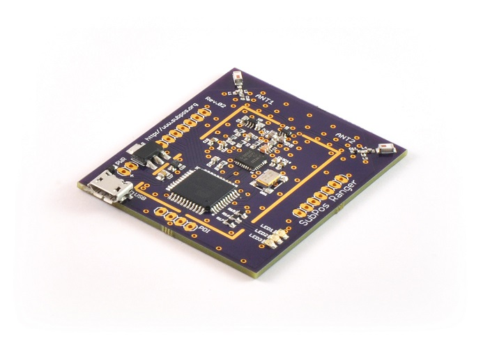

SubPos Ranger
PLEASE NOTE: THE RANGER IS DISCONTINUED - https://hackaday.io/project/9242-subpos-ranger/log/53815-end-of-the-ranger
The SubPos Ranger is a node and client based, open source development system for accurate distance measurement and positioning. The Ranger is designed for hobbyist robotics and educational applications, to enable you to realise your project’s positioning potential.

Key Features
- Supports 2D and 3D Positioning – not just x and y, but z also.
- 2.4GHz ISM Spectrum – supported worldwide.
- Standards Compliant Hardware – supports 802.15.4 and can also utilise Zigbee or 6LoWPAN communication protocols.
- Reconfigurable RF Chipset – enables many different 2.4GHz ISM applications.
- Firmware Updates over USB – no need for any extra programming hardware.
- Open Source Hardware and Software – hack, repurpose and play to your heart’s content.
- Modular Design – the Ranger Board’s headers allow all sorts of connectivity options.
- Low Level Raw Data and Parameters – access to all low level measurement data and parameter tweaks are available to discover interesting new applications (such as radar motion detection).
- Node Position Calibration – get the position of nodes automatically; no manual fixed node measurements required.
- 9-Axis Accelerometer – the client expansion board contains a 9 axis accelerometer for increased positioning accuracy.
What Can It Do?
The distance measurement capability of the Ranger Boards achieves accuracy of up to +-10cm in line of sight conditions. When combined with the client expansion board and Teensy module, the position is calculated completely on the client without any external processing required. As such, it allows you to connect to autonomous platforms, enabling them to know where they are anywhere indoors. You will now be able to gather every piece of cat hair with your robot vacuum.
The RF chipset on board also provides a true 2.4GHz ISM transceiver interface, this means that the Ranger Board is completely reconfigurable and not limited to only standards compliant purposes. Because of this it can be also used in an array of different RF applications such as radio modems, motion detection or sniffing devices.
More details here - https://hackaday.io/project/9242-subpos-ranger